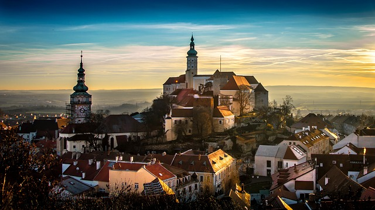
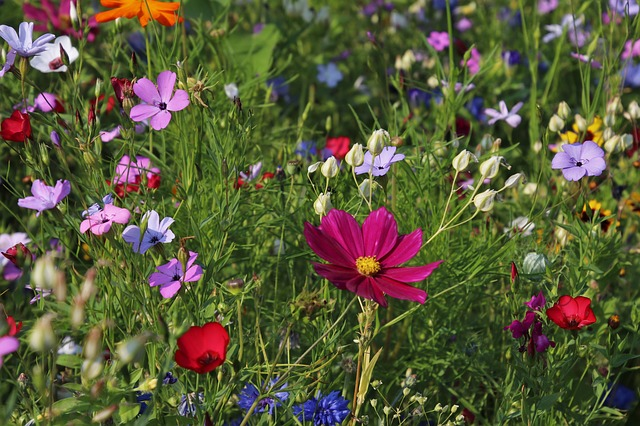

CSS filters
Blur | Rozmycie


Tekst
Brightness | Jasność
Tekst
Contrast | Kontrast
Tekst
Grayscale | Skala szarości
Tekst
Opacity | Przezroczystość
Tekst
Hue-rotate | Odcień koloru / koło barw
Tekst
Sepia
Tekst
Invert | Odwrócenie
Tekst
Saturate | Nasycenie
Tekst
Więcej niż jeden filtr
Tekst